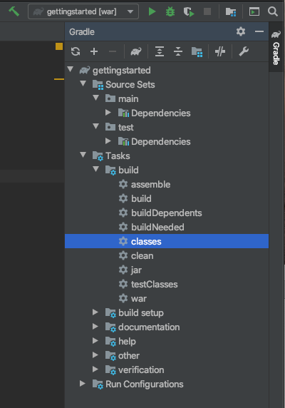
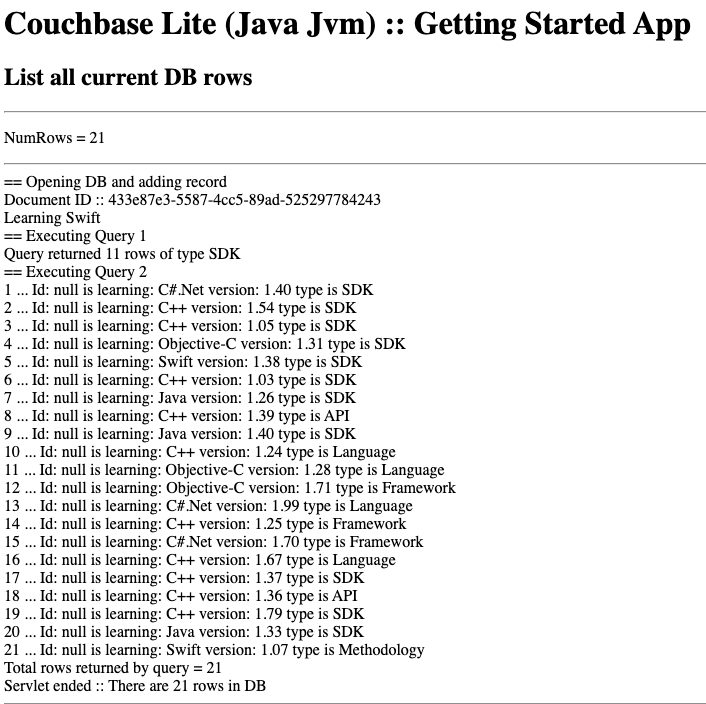

Build and Run
Description — Build and run a starter app to validate your install of Couchbase Lite on Java
Abstract — This content provides sample code and instructions that enable you to test your Couchbase Lite for java installation.
Related Content — Install | Prerequisites | Build and Run |
Build a Getting Started App
This section explains how to validate your configured build environment by building a starter app that uses many of Couchbase Lite on Java’s more common features.
The GettingStarted app demonstrates how to use Couchbase Lite on Java. Console and Web App versions are available.
- Desktop App
-
Ensure you added the Couchbase Lite dependency to your build.gradlefileCreate, build and run a new project using the following
GettingStarted.javacode:(1) // One-off initialization CouchbaseLite.init(); System.out.println("CBL Initialized"); (2) // Create a database Database database = new Database("mydb"); System.out.println("Database created: mydb"); (3) // Create a new collection (like a SQL table) in the database. Collection collection = database.createCollection("myCollection", "myScope"); System.out.println("Collection created: " + collection); (4) // Create a new document (i.e. a record) // and save it in a collection in the database. MutableDocument mutableDoc = new MutableDocument() .setString("version", "2.0") .setString("language", "Java"); collection.save(mutableDoc); (5) // Retrieve immutable document and log the database generated // document ID and some document properties Document document = collection.getDocument(mutableDoc.getId()); if (document == null) { System.out.println("No such document :: " + mutableDoc.getId()); } else { System.out.println("Document ID :: " + document.getId()); System.out.println("Learning :: " + document.getString("language")); } (6) // Retrieve and update a document. document = collection.getDocument(mutableDoc.getId()); if (document != null) { collection.save(document.toMutable().setString("language", "Kotlin")); } (7) // Create a query to fetch documents with language == "Kotlin" Query query = QueryBuilder.select(SelectResult.all()) .from(DataSource.collection(collection)) .where(Expression.property("language") .equalTo(Expression.string("Kotlin"))); try (ResultSet rs = query.execute()) { System.out.println("Number of rows :: " + rs.allResults().size()); } // (8) // OPTIONAL -- if you have Sync Gateway Installed you can try replication too // Create a replicator to push and pull changes to and from the cloud. // Be sure to hold a reference somewhere to prevent the Replicator from being GCed // BasicAuthenticator basAuth = new BasicAuthenticator("sync-gateway", "password".toCharArray()); CollectionConfiguration collConfig = new CollectionConfiguration() .setPullFilter((doc, flags) -> "Java".equals(doc.getString("language"))); ReplicatorConfiguration replConfig = new ReplicatorConfiguration( new URLEndpoint(new URI("ws://localhost:4984/getting-started-db"))) .addCollection(collection, collConfig) .setType(ReplicatorType.PUSH_AND_PULL) .setAuthenticator(new BasicAuthenticator("sync-gateway", "password".toCharArray())); Replicator replicator = new Replicator(replConfig); // Listen to replicator change events. // Use `token.remove()` to stop the listener ListenerToken token = replicator.addChangeListener(change -> { System.out.println("Replicator state :: " + change.getStatus().getActivityLevel()); }); // Start replication. replicator.start(); }1 Initialize the library 2 Create a database 3 Create a collection 4 Create a new document 5 Retrieve document and log its ID 6 Retrieve the document as mutable and change the languagetoKotlinand save it7 Query the database output count and id to log 8 Optionally, initiate a replication On running the app, you should see the document ID and property printed to the console together with a query result showing the number of rows in the database.
This shows the document was successfully persisted to the database.
See [About the Getting Started App] for more on the app itself
- Web App
-
This section explains how to set-up a build project to create Couchbase Lite on Java web apps using gradle and Intellij IDEA.
Steps
-
Create a new project folder and add a
build.gradlefile similar to this one.include::example$GetStartedWS/build.gradle.sample -
Within Intellij IDEA, open the new project folder
If you don’t have auto-import enabled, then accept the Import from Gradle prompt that appears at the bottom right of the screen.
-
Create a Java class DBManager using this code:
(1) // One-off initialization private void init() { CouchbaseLite.init(); } (2) // Create a database public Database createDb(String dbName) throws CouchbaseLiteException { return new Database(dbName); } (3) // Create a new named collection (like a SQL table) // in the database's default scope. public Collection createCollection(Database database, String collName) throws CouchbaseLiteException { return database.createCollection(collName); } (4) // Create a new document (i.e. a record) // and save it in a collection in the database. public String createDoc(Collection collection) throws CouchbaseLiteException { MutableDocument mutableDocument = new MutableDocument() .setFloat("version", 2.0f) .setString("language", "Java"); collection.save(mutableDocument); return mutableDocument.getId(); } (5) // Retrieve immutable document and log the database generated // document ID and some document properties public Document retrieveDoc(Collection collection, String docId) throws CouchbaseLiteException { return collection.getDocument(docId); } (6) // Retrieve and update a document. public void updateDoc(Collection collection, String docId) throws CouchbaseLiteException { Document document = collection.getDocument(docId); if (document != null) { collection.save( document.toMutable().setString("language", "Kotlin")); } } (7) // Create a query to fetch documents with language == Kotlin. public List<Map<String, Object>> queryDocs(Collection collection) throws CouchbaseLiteException { Query query = QueryBuilder.select(SelectResult.all()) .from(DataSource.collection(collection)) .where(Expression.property("language").equalTo(Expression.string("Kotlin"))); List<Map<String, Object>> results = new ArrayList<>(); try (ResultSet rs = query.execute()) { for (Result result: rs) { results.add(result.toMap()); } } return results; } (8) // OPTIONAL -- if you have Sync Gateway Installed you can try replication too. // Create a replicator to push and pull changes to and from the cloud. // Be sure to hold a reference somewhere to prevent the Replicator from being GCed public Replication startReplicator(Collection collection, ReplicatorChangeListener listener) throws URISyntaxException { CollectionConfiguration collConfig = new CollectionConfiguration() .setPullFilter((doc, flags) -> "Java".equals(doc.getString("language"))); ReplicatorConfiguration replConfig = new ReplicatorConfiguration( new URLEndpoint(new URI("ws://localhost:4984/getting-started-db"))) .addCollection(collection, collConfig) .setType(ReplicatorType.PUSH_AND_PULL) .setAuthenticator(new BasicAuthenticator("sync-gateway", "password".toCharArray())); Replicator replicator = new Replicator(replConfig); // Listen to replicator change events. // Use `token.remove()` to stop the listener ListenerToken token = replicator.addChangeListener(listener); // Start replication. replicator.start(); return new Replication(replicator, token); } public void stopReplicator(Replication replication) { if (replication == null) { return; } replication.token.remove(); replication.replicator.stop(); } } -
Create a Servlet similar to the one found in the example GettingStartedServlet
-
Create an
index.htmlfile insrc/main/web appwith the following content:include::example$GetStartedWS/src/main/webapp/index.html -
Create a
showDbItems.jspfile insrc/main/web appwith the following content:include::example$GetStartedWS/src/main/webapp/showDbItems.jsp -
Build, deploy and run the app using
jettyRun-
Point your browser to: `localhost:8080/'
This opens the browser at your index.html page.
-
Select the here link
This launches the servlet and displays the results in
showdDbItems.jsp.
-
-
+ About the Starter App::
+
-
Create a database
The app creates its database in the
/getting-started.cblite2directory relative to its root location when run (See: Finding a Database File).
| Explicitly state your required database location when creating your database (see: Finding a Database File for how to do this) |
-
Add content to the DB
-
Run a simple query counting the DB rows
-
Start a one-shot, bi-directional replication using Sync Gateway and Couchbase Server
-
Produce a simple report on the db Contents

| Before starting your app ensure you have started both your Couchbase Server and Sync Gateway instances. |